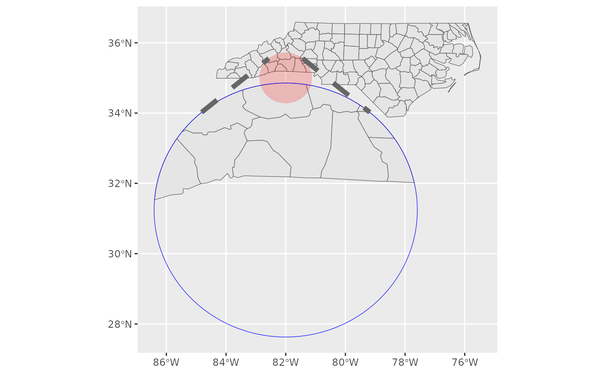

The frame is computed from the inset configuration, so any data passed
to this layer is ignored. The frame is an sf object consisting of three features:
the source area, the target area (a scaled and translated version of the source
area), and the connecting/burst lines.
Arguments
- mapping, data, stat, position, na.rm, show.legend, inherit.aes, ...
See
ggplot2::geom_sf().- inset
Inset configuration; see
configure_inset(). IfNA(the default), this is inherited from the coord (seecoord_sf_inset()).- source.aes, target.aes, lines.aes
Override the aesthetics of the inset source, target, and lines respectively. The value should be a list named by the aesthetics, and the values should be scalars of length one.
Details
Burst lines for circular insets are bitangenets (tangent to both the source and target circles) or absent if the circles are nested. Burst lines for rectangular insets are the shortest line from each corner of the source rectangle to any corner of the target rectangle, after excluding any such lines that intersect either rectangle or each other. When the burst lines are absent due to geometrical constraints, there will still be a corresponding (empty) feature in the frame layer's data.
Limitation
The frame cannot be drawn without another sf layer that contains data due to
a limitation of the ggplot layout evaluation. Attempting to plot a frame by
itself will result in the error:
"Scale limits cannot be mapped onto spatial coordinates in coord_sf()".
Examples
library(ggplot2)
nc <- sf::st_read(system.file("shape/nc.shp", package = "sf"), quiet = TRUE)
ggplot(nc) +
geom_sf_inset() +
geom_inset_frame(
source.aes = list(fill = "red", alpha = 0.2, linewidth = 0),
target.aes = list(colour = "blue"),
lines.aes = list(linetype = 2, linewidth = 2)
) +
coord_sf_inset(inset = configure_inset(
shape_circle(centre = c(-82, 35), radius = 50),
scale = 5, translation = c(0, -260), units = "mi"
))
#> Warning: `centre` has no coordinate reference system; assuming WGS 84
#> ℹ Provide `centre` as a `sf::st_sfc()` with an explicit `crs` to suppress.
